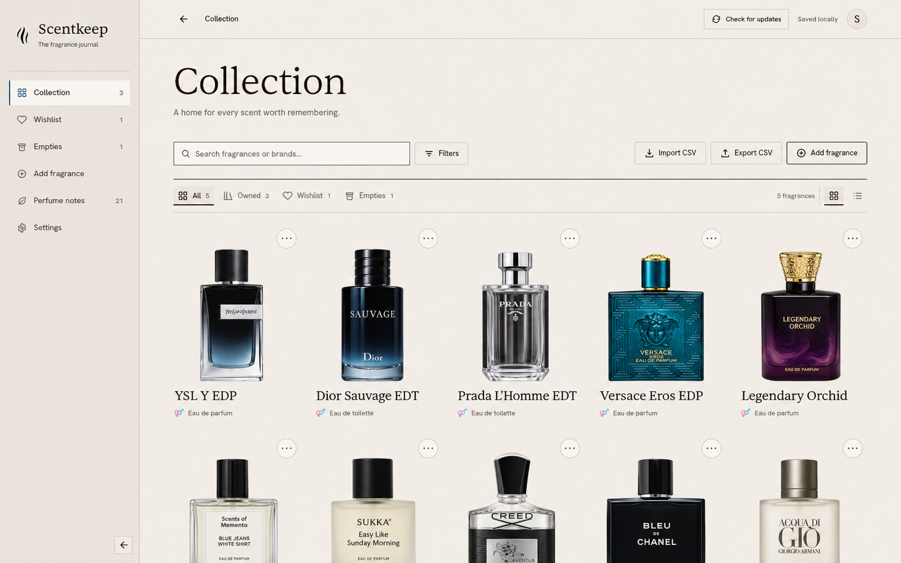

Find it on Parfumo.
Search a fragrance or paste its link. Review available details, bring them into your form, and save when you’re ready.
Import a fragrance ↗A little order. A lot of memories.
The bottle you reach for. The one you’re dreaming of. Keep them all in a personal fragrance journal, right on your desktop.
Made for Windows, macOS & Linux

Stored on your computer
Notes in your own words
Readable CSV backups
01 / Make it your own
From your everyday favourites to your next discovery, give every fragrance a place and every detail a little attention.
A little more to explore
Start with a catalogue find, make sense of your notes, and settle into a journal that feels like home.
Search a fragrance or paste its link. Review available details, bring them into your form, and save when you’re ready.
Import a fragrance ↗Give notes categories and images, see where they’re used, and explore the relative accord profile they create.
Notes & main accords ↗Choose from 11 palettes and switch between light and dark appearance. Your preferences stay saved on this installation.
Appearance settings ↗02 / The field guide
Install Scentkeep on your desktop and make room for your collection.
Installation guideAdd fragrances, arrange your shelves and find exactly what you’re looking for.
Collection guideBring notes, ratings and personal impressions into a complete fragrance record.
Fragrance recordsConnect Parfumo for note search, or build your own catalogue by hand.
Parfumo guideExport readable CSV files, restore your records and set up local backups.
Backups & CSVConnect an HTTPS WebDAV folder to keep a copy beyond this computer.
WebDAV setupSearch by fragrance or brand, or paste a link. Review and import the available details.
Fragrance importEdit shared notes, manage categories and images, and understand your main accords.
Notes & main accordsChoose from 11 palettes, switch light or dark appearance, and personalise your local profile.
Appearance settingsUse WebDAV to move your collection between installations, with the sync rules explained.
Prepare consistent bottle artwork with a ready-to-copy product image prompt.
No guides match your search. Try “backup”, “notes” or “install”.
03 / Always in your hands
Your working collection lives on your computer. Readable exports and optional backups make it easier to look after what you’ve built.
Look after your collectionA few things to know
Scentkeep is a desktop app for Windows, macOS and Linux. Find the packages and platform-specific steps in the installation guide.
You can enter notes manually. A connected Parfumo account adds note search and metadata. Connection can be affected by Cloudflare verification; the Parfumo guide covers troubleshooting.
Yes, through a shared WebDAV folder. Sync merges records and remote values overwrite matching local records. Deletions do not propagate. Read the multi-device guide before your first sync.
Export both your fragrances and notes to CSV. Keep both files to restore the complete collection. The backup guide explains imports, exports and automatic copies.
Open Settings, choose a palette in Appearance, and use the Dark mode switch. Choices are saved on this installation. The appearance guide lists the available palettes.
Your next favourite has a place here.
Windows · macOS · Linux
Need a hand installing?